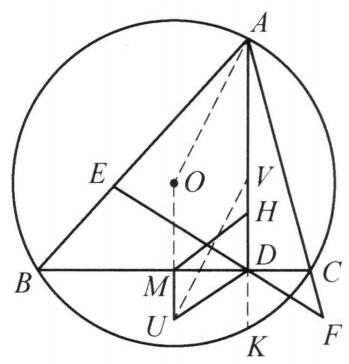

88 例 3：相交弦定理与平行四边形判定
88.1 题目
锐角 \triangle {ABC} 中， {AB} > {AC}, H 为其垂心， {AD}\perp {BC} 于点 D, E, F 在射线 {AB},{AC} 上且 {EF} 过点 D ,满足 B, E, C, F 四点共圆,其圆心为 U, M 为 {BC} 的中点. 证明: 四边形 {MUDH} 为平行四边形.

图 6-4
88.2 参考解答
如图 6-4,设 \triangle {ABC} 的外心为 O ,延长 {AD} 与圆 O 交于点 K .
由圆幂定理得 {AD} \cdot {DK} = {BD} \cdot {DC} = {ED} \cdot {DF} ,从而 A, E, K, F 四点共圆. 设 V 是 {AK} 的中点,连接 {OA} , {OU},{UV} . 由 A, B, K, C 和 A, E, K, F 四点共圆,知 K 为完全四边形 {AEBDCF} 的密克点,则 E, B, K, D 和 D, K, F, C 都四点共圆,则 {AK} 为圆 {AEKF} 的直径.
由 U, V 分别是圆 {BECF} 和圆 {AEKF} 的圆心,知 {UV} \perp {EF} ,导角易证 {AO} \perp {EF} ,故 {UV}//{AO} ,又 {OU}//{AV} ,则四边形 {OAVU} 是平行四边形, 于是
{MU} = {OU} - {OM} = {AV} - \frac{1}{2}{AH}
= \frac{1}{2}{AK} - \frac{1}{2}{AH} = \frac{1}{2}{HK} = {DH},
所以，四边形 {MUDH} 为平行四边形.
注:引入点 K ，将命题转化为 {MU} = {DK} ，通过共圆导出 {AV} = {OU} 即可.
88.3 解题思路与分析
这个证明之所以让人觉得“费解”，是因为教材采用的是“从因到果”的综合法（正推）——一上来就凭空抛出外心 O、交点 K、中点 V，再突然搬出“密克点”，看起来就像魔术师从帽子里变兔子一样毫无征兆。
但在几何解题者的脑海中，真实思考过程其实是“执果索因”的分析法（逆推），外加几个平面几何的“标准肌肉记忆”。只要把这个证明倒过来拆解，你会发现每一步辅助线的添加其实都是被目标“逼”出来的：
88.3.1 第一步：剖析目标——其实只需证明线段相等 MU = DH
我们要证四边形 MUDH 是平行四边形。先看已知条件里有什么现成的性质： 1. U 是圆 BECF 的圆心，BC 是它的一条弦，M 是弦 BC 的中点。根据垂径定理，必然有 MU \perp BC。 2. 已知 AD \perp BC，垂心 H 在高线 AD 上，所以 DH \perp BC。
既然 MU 和 DH 都垂直于 BC，那么 MU \parallel DH 是天然成立的！ 因此，要证 MUDH 是平行四边形，唯一需要证明的就是它们的长度相等：MU = DH。
88.3.2 第二步：触发“肌肉记忆”——看到垂心 H 和中点 M，自然呼出 O 和 K
现在目标变成了证明两条竖直线段 MU = DH。 难点在于：H 是 \triangle ABC 的垂心，而 U 是另一个圆的圆心，两者八竿子打不着。怎么把垂心 H 转化成更容易和圆打交道的对象？
做惯几何题的人看到“垂心 H、高线足 D、边中点 M”，脑子里会立刻触发两个最经典的“条件反射”（平面几何基本构型）：
- 反射一（欧拉线/外心垂心基本性质）：引入 \triangle ABC 的外心 O。
- 因为 M 是 BC 中点，由垂径定理知 OM \perp BC，所以 O, M, U 三点共线（都在 BC 的中垂线上）！
- 而且我们熟知一个经典结论：外心到边的距离等于垂心到顶点距离的一半，即： OM = \frac{1}{2}AH
- 反射二（垂心关于边的对称点在外接圆上）：延长高线 AD 交外接圆 \odot O 于点 K。
- 这是一个极其常用的转化：垂心 H 关于 BC 的对称点就是 K，即 DH = DK = \frac{1}{2}HK。
- 为什么要引出 K？因为 H 只是垂心，而 K 在外接圆 \odot O 上，一旦到了圆上，就能用圆周角定理和圆幂定理！
【关键的算式逆推】 现在，我们在草稿纸上把这两个基本性质代进目标 MU = DH 里算一算，看看我们真正需要证什么： MU = DH \iff OU - OM = \frac{1}{2}HK 把 OM = \frac{1}{2}AH 移项过去： OU = OM + \frac{1}{2}HK = \frac{1}{2}AH + \frac{1}{2}HK = \frac{1}{2}(AH + HK) = \frac{1}{2}AK
破案了！ 原来要证 MU = DH，本质上就是要证 OU = \frac{1}{2}AK！（这就是书中最后“注”里那句话的真正来历。）
88.3.3 第三步：为了证 OU = \frac{1}{2}AK，自然取中点 V 构造平行四边形
现在盯着新目标：OU = \frac{1}{2}AK。 注意 OU 和 AK 都垂直于 BC，即 OU \parallel AK。 在几何中，要证明一条线段等于另一条平行线段的一半，最自然的做法是什么？ 当然是取 AK 的中点 V，让 AV = \frac{1}{2}AK，然后去证 OU = AV！
既然已经有了 OU \parallel AV，要证 OU = AV，就等价于要证四边形 OAVU 是平行四边形，也就等价于要证另一组对边平行： UV \parallel AO
88.3.4 第四步：寻找点 V 的几何意义——“圆幂定理”与“连心线垂直公共弦”
逆推到这里，只剩最后一个问题：点 V 是我们为了凑 \frac{1}{2}AK 取的 AK 中点，它凭什么能和圆心 U 扯上关系，还刚好满足 UV \parallel AO？
这就要看图中的点 D 了： * 在 \odot O 中，弦 BC 和弦 AK 相交于点 D； * 在 \odot U（即圆 BECF）中，割线 BC 和割线 EF 也相交于点 D。
两个圆的弦/割线交于同一个点 D，立刻触发相交弦定理（圆幂定理）： AD \cdot DK = BD \cdot DC = ED \cdot DF 这直接白送了一个结论：A, E, K, F 四点共圆！
一旦发现 A, E, K, F 四点共圆，解题者立刻会联想到： * U 是圆 BECF 的圆心； * 圆 BECF 和圆 AEKF 相交于 E, F 两点，EF 是两圆的公共弦！ * 根据圆的基本性质：两圆的连心线必然垂直于公共弦（\perp EF）。 * 同时，由于 B, E, C, F 四点共圆，EF 与 BC 关于 \angle A 构成经典的“反平行线”构型，导角极易证明外接圆半径 AO \perp EF（连接 AO：\angle OAE = 90^\circ - \angle C，而在圆 BECF 中 \angle AEF = \angle C，故 \angle OAE + \angle AEF = 90^\circ，即 AO \perp EF）。
既然 AO \perp EF，而我们又想证 UV \parallel AO，那就只需要 UV \perp EF！ 怎么才能让 UV \perp EF？只要 V 恰好就是圆 AEKF 的圆心，那么 UV 就是两圆的连心线，自然就有 UV \perp EF 了！
88.3.5 第五步：戳破“密克点”的神秘面纱（其实只需两步导角）
最后一步验证：作为弦 AK 中点的 V，为什么恰好是圆 AEKF 的圆心？ 弦的中点是圆心 \iff 弦 AK 是圆 AEKF 的直径 \iff \angle AEK = 90^\circ。
书上的证明为了省字数，直接甩出了一个高大上的名词——“K 是完全四边形 AEBDCF 的密克点（Miquel point）”。其实完全不需要知道什么是密克点，只需两行初中水平的圆周角导角就能看出来： 1. 因为 A, E, K, F 四点共圆，所以外角等于内对角（或同弧所对圆周角相等）：\angle KED = \angle KAF = \angle KAC。 2. 因为 A, B, K, C 四点共圆（都在 \odot O 上），同弧 KC 所对的圆周角相等：\angle KBC = \angle KAC。 3. 所以 \angle KED = \angle KBC（即 \angle KED = \angle KBD），这意味着 E, B, K, D 四点共圆！ 4. 在圆 EBKD 中，因为 AD \perp BC，所以 \angle BDK = 90^\circ，同弧所对的 \angle BEK = \angle BDK = 90^\circ，从而邻补角 \angle AEK = 90^\circ，故 AK 是圆 AEKF 的直径，中点 V 就是圆心！
88.3.6 思维全貌复盘
把整条思考链条倒过来串一遍，你会发现它的逻辑非常丝滑：
\begin{aligned} \text{欲证 } MUDH \text{ 是平行四边形} &\xleftarrow{\text{已知 } MU \parallel DH} \text{只需证 } MU = DH \\ &\xleftarrow{OM = \frac{1}{2}AH,\; DH = \frac{1}{2}HK} \text{等价于证 } OU = \frac{1}{2}AK \\ &\xleftarrow{\text{取 } AK \text{ 中点 } V} \text{只需证 } OU = AV \text{（即 } OAVU \text{ 是平行四边形）} \\ &\xleftarrow{\text{已知 } OU \parallel AV} \text{只需证 } UV \parallel AO \\ &\xleftarrow{\text{反平行性质 } AO \perp EF} \text{只需证 } UV \perp EF \text{（连心线垂直公共弦）} \\ &\xleftarrow{U \text{ 是圆 } BECF \text{ 圆心}} \text{只需证 } V \text{ 是圆 } AEKF \text{ 圆心（即 } AK \text{ 为直径）} \end{aligned}
写书的人在草稿纸上顺着箭头的方向从上往下（逆推）想通了整道题，但在排版成书时，为了书写简短，把它从下往上（正推）写出来，并且省掉了中间的算式转化和导角细节，这就造成了阅读时的“断层感”。
在这几个环节中，你觉得最卡壳的是“引入 O, K 转化线段”这一步，还是后半段“圆心连心线 UV \perp EF”的构造？如果有哪一步导角细节想展开聊聊，随时告诉我！
88.4 分步证明
88.4.1 步骤 0：已知条件与几何构型
锐角 \triangle ABC 中，AB > AC，H 为垂心，高线 AD \perp BC 于点 D。 点 E, F 分别在射线 AB, AC 上且线段 EF 经过点 D； B, E, C, F 四点共圆，圆心记为 U；M 为边 BC 的中点。 求证：四边形 MUDH 为平行四边形。
88.4.2 步骤 1：① 延长高线 AD 与外接圆交于点 K
作 \triangle ABC 的外接圆 \odot O。延长高线 AD 与外接圆相交于点 K。 由外接圆垂心反射性质，垂心 H 关于边 BC 的对称点必落在外接圆上。 因为对称轴 BC \perp HK，所以垂足 D 恰为线段 HK 的中点，即： DH = DK = \frac{1}{2}HK。
88.4.3 步骤 2：② 圆幂定理与密克点性质（AK 为直径）
在圆 \odot O 中，由相交弦定理得：AD \cdot DK = BD \cdot DC。 在圆 \odot U 中，割线 EF 与 BC 交于点 D，得：ED \cdot DF = BD \cdot DC。 两式联立导出：AD \cdot DK = ED \cdot DF，故 A, E, K, F 四点共圆（圆心记为 V）。 点 K 实为完全四边形 AEBDCF 的密克点，由共圆知 \angle AEK = \angle AFK = 90^\circ。 因此，AK 为圆 AEKF 的直径，圆心 V 即为线段 AK 的中点。
88.4.4 步骤 3：③ 连心线与反平行线导出 UV \parallel AO
- 圆 \odot U 与圆 \odot V 相交于 E, F 两点，公共弦为 EF。 两圆连心线垂直平分公共弦，故 UV \perp EF。
- 导角易证：在 \odot O 中 \angle OAC = 90^\circ - B；在圆内接四边形 BECF 中外角 \angle AFE = \angle B。 在 \triangle APF 中导出 AO \perp EF。
- 两线均垂直于直线 EF，故 UV \parallel AO。
88.4.5 步骤 4：④ 构造平行四边形 OAVU \implies OU = AV
因为 O 为外心、M 为 BC 中点，所以中垂线 OM \perp BC； 点 U 亦在 BC 中垂线上，故直线 OU \perp BC。 而高线 ADK \perp BC，即直线 AV \perp BC。 因此，OU \parallel AV。 结合前一步已证的 UV \parallel AO，四边形 OAVU 两组对边分别平行， 因此 四边形 OAVU 为平行四边形，从而对边相等：OU = AV。
88.4.6 步骤 5：⑤ 线段等长 MU = DH \implies MUDH 为平行四边形
由经典欧拉线性质知 OM = \frac{1}{2}AH，且 V 为 AK 中点知 AV = \frac{1}{2}AK。 将 OU = AV 代入线段代数式： MU = OU - OM = AV - \frac{1}{2}AH = \frac{1}{2}AK - \frac{1}{2}AH = \frac{1}{2}HK = DH！ 因为直线 MU \perp BC 且直线 DH \perp BC，故 MU \parallel DH； 一组对边平行且相等（对角线 MD 与 HU 互相平分于中点）， 因此，四边形 MUDH（顶点顺序 M-H-D-U）为平行四边形！命题得证。